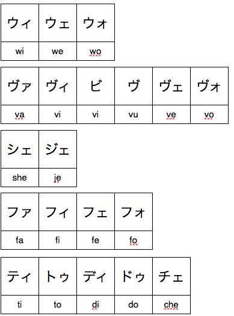

Katakana Rules
“If you don’t know where you’re going, you’ll probably not wind up there.” - Forrest Gump
There are a few things about katakana that are different from hiragana, and I’m going to go over them here. In many ways, though, the ability to read and write katakana is going to come through experience. Just seeing katakana words a lot over a long period of time is going to be the thing that makes you good at using katakana. In TextFugu, I’m going to try to provide that little by little as you move along, but if you see something in katakana, challenge yourself to sound it out and figure out what it means! Every time you do this, you’ll get better at using katakana.
Long Vowels
Katakana long vowels are different from the ones you see in hiragana. In hiragana, you see things like こういち or あたらしい, where you use another hiragana character to extend the vowel’s length. In katakana, however, you use a dash, like this:
ー
One thing I see a lot of people run into is that they think this is the kanji for the word “one.” If you see this with some katakana, though, you can be pretty sure it’s just extending the vowel, though.
Here is an example:
a コーヒー = Coffee
ko (extend the “o” sound) + hi (extend the “i”) sound.
So, when you see the ー character, know that all its doing is extending the vowel sound that comes before it. This is really common in katakana words (especially foreign words), so you’ll get plenty of practice. For now, just know what it does, and that will be enough.
“Weird” New Sounds
As you know, katakana is often used to write foreign words. Based on the pronunciation of the foreign word, the Japanese come up with an approximation of the word using only the sounds available to them in the katakana “alphabet.” Sometimes it can be pretty close and pretty accurate. Sometimes it’s not even close. Because of this, “new” sounds have been created using katakana to help allow words to be made into Japanese. Although all of these use the same katakana characters you just learned, they’re a bit… different. Here they are:

You don’t have to be 100% with all these right now, just because they aren’t as common as everything else, but I have created some resources to help ease the pain. First, a “Weird Katakana Rules” cheat sheet that you can use to refer to.
Weird Katakana Rules Cheat Sheet
If you take a look at these “Weird Katakana Rules,” though, you’ll notice that most of them make quite a bit of sense. Please note that the romaji written under them represents the Japanese pronunciation of the above katakana, not the English pronunciation. So, “ti” would be pronounced more like “tee.”
The above combo katakana won’t be found (much) in hiragana, and they all create sounds that don’t really exist in Japanese (or, at least, didn’t exist before) in order to accommodate the foreign language loan words.
“Wi, we, wo” ー The only thing that existed before was “wa” and “wo” (which sounds more like “o” anyways)
“Va, vi, vu, ve, vo” ー These are actually pronounced with a “B/Bw” sound. “Bwa, bwi, bu, bwe, bo.” Even though these represent the “V” sound, Japanese people don’t actually use the “V” sound as a “V.”
“She, Je” ー This one is pretty easy. There is no “ye” character to turn a “shi” into a “she.” So, instead of a “ye” character, an “e” character is used.
“Fa, Fi, Fe, Fo” ー There’s a “fu” already, strangely, but none of these existed before. Basically, you take the “fu” sound (the only “F” sound in katakana) and you use small アイエオ to make it into “Fa, Fi, Fe, Fo” sounds.
“Ti, To, Di, Do, Che” ー ”Ti” and “Di” are great ones, because this replaces the next closest thing, “chi” and “dzi,” which aren’t all that close. “To” isn’t used that much, since ト (と) is basically the same sound, sames goes with “Do.” “Che” is there because otherwise it would be “te,” and that’s not anything like the sound “che.”
There are some other weird things, like how to make an “X” sound (hint, it’s エクス), but the ones above are the ones I want you to know. You don’t have to know how to write anything from scratch yet (i.e. if I said a non-Japanese word, I don’t expect you to be able to spell it out in katakana), but I do want you to be able to know basically what ティ sounds like or what ファ sounds like. As long as you know those things, you can start reading words in katakana and then use that to build up your katakana knowledge, slowly over time.
Also, if you continue your Katakana Anki list, you’ll notice that these “weird rules” are included. Go ahead and continue your Katakana Anki list to the very end, all the way to チェ. When you finish, you won’t know everything 100%, I’m sure, but over the next couple weeks, as long as you follow through with the review recommendations that Anki provides, you’ll know everything in no time. Plus, we’ll be using and studying these throughout all future seasons. Either way, you’ll learn your katakana.
Let’s get that process started right now. Make sure you have both your katakana chart and your “Weird Katakana Rules Cheatsheet” downloaded and at the ready.